Robot Fish Simulator Survey
Six simulation tools applied to one soft, hydraulically actuated robot fish: what each one takes as input, what it produces, how it works inside, and what it can and cannot answer.
1 · Summary
Each tool answers a different question about the same fish. Three tools simulate the whole fish swimming freely, two look closely at the soft tail, and one models the drive train from the battery to the fin.
| Tool | Branch / folder | Level of detail | What it shows in this repo |
|---|---|---|---|
| MuJoCo | main · MuJoCo/ | Whole fish, rigid segments | Swimming, turning, depth control with a bladder; interactive keyboard control |
| Stonefish | stonefish · Stonefish/ | Whole fish, rigid segments, marine environment | Hydrodynamics from the mesh, VBS ballast, noisy pressure and IMU sensors, sea current |
| PyElastica | pyelastica · fish_elastica_demo/ | Whole fish as one soft rod | Chamber-driven bending, free 3D swimming, effect of stiffness on speed, depth control |
| SOFA + SoftRobots | sofa · SOFA/ | Tail only, 3D finite elements | How the silicone tail and its chambers deform: p–V curve, bend angle, flapping in air and water |
| OpenFOAM + preCICE + CalculiX | openfoam · OpenFOAM/ | Tail and water flow, 2D | Two-way fluid–structure interaction: vortex wake, added mass, tethered thrust |
| OpenModelica | openmodelica · FishRobot/ | System model, lumped | Battery → motor → pump → pipes → chambers → tail; energy budget, ballast, FMU export, calibration |
Which tool for which question
| Question | First choice | Also useful |
|---|---|---|
| Does the fish swim, turn and hold depth? I want to tune controllers interactively. | MuJoCo | Stonefish |
| Does the control software work with noisy sensors and a sea current? Path to ROS 2. | Stonefish | MuJoCo |
| How does body and tail stiffness change speed, cheaply and with a continuous body? | PyElastica | SOFA |
| What pressure does a chamber need for a given volume and bend? Which wall, fiber or spine design bends best? | SOFA | OpenFOAM (CalculiX part) |
| What does the water really do: wake, added mass, real thrust or drag? | OpenFOAM FSI | none of the others resolves flow |
| Are the motor, pump and battery sized right? How long does the battery last? Where is the energy lost? | OpenModelica | none of the others has electrics |
| How do I turn bench measurements into model parameters? | OpenModelica (calibrate.py) | calibration plans in the MuJoCo and SOFA READMEs |
2 · The common fish model
All six demos model the same robot concept, a fish with a soft silicone tail bent by water pumped between two chambers. Knowing this loop makes the input tables in section 3 readable.
The same quantities, set differently in each demo
| Quantity | MuJoCo | Stonefish | PyElastica | SOFA | OpenFOAM | OpenModelica |
|---|---|---|---|---|---|---|
| Body | ellipsoid hull 25×10×10 cm | same as MuJoCo | whole fish = rod 0.40 m | none (tail clamped) | 2D head, half-ellipse 60 mm, fixed | lumped mass 1 kg |
| Tail | 5 rigid segments × 40 mm, 3 actuated | 5 rigid segments × 40 mm | continuous, chamber zone 0.20–0.32 m | 3D FEM, 0.20 m | 2D FEM, 0.15 m | 1 rotational DOF |
| Pump flow Q_max | 60 ml/s | 60 ml/s | 160 ml/s | 250 ml/s | none (pressure prescribed) | 0.3 ml per revolution |
| Volume amplitude A_V | 8 ml | 8 ml | 8 ml | 17 ml | P0 = 15 kPa | CPG duty A = 0.8 |
| Relief pressure | 50 kPa | 50 kPa | 50 kPa | 50 kPa | none | 50 kPa |
| Ballast | bladder 0–40 ml | VBS 0.5–40.5 ml | bladder 0–40 ml | none | none | syringe 12.5 ml |
3 · The six tools
Each tool section has the same parts: a fact sheet, the working principle, the inputs (what the demo uses and what the tool could also take), the outputs with example values from the repo, the demo stages, and the limitations. Screenshots and videos come from the programs themselves, recorded for this report on 9 Oct 2026; where a tool has no GUI, the demo's own animation is shown.
MuJoCo
A fast rigid-body engine with a simple built-in water model. The fish is a hull and a chain of five rigid tail segments; buoyancy and hydraulics are added in Python.
- Method
- Rigid multibody dynamics + quasi-static ellipsoid fluid forces
- Interface
- Python bindings, MJCF model generated in code
- Tested version
- MuJoCo 3.14.0, Python ≥ 3.10
- Install
pip install -r requirements.txt, minutes- Speed
- Live in the interactive viewer; scenarios of 10–130 s run headless
- Licence*
- Apache-2.0
In the program: GUI and demo video
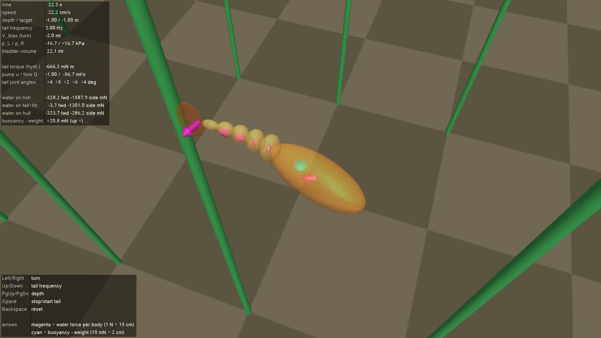
fishsim/readouts.py). A script presses the keys at these simulation times: → at 8 s, ← at 17 s, → at 26 s, PgDn at 28 s (dive). Video file: docs/media/mujoco_demo.mp4 (plays in the HTML version).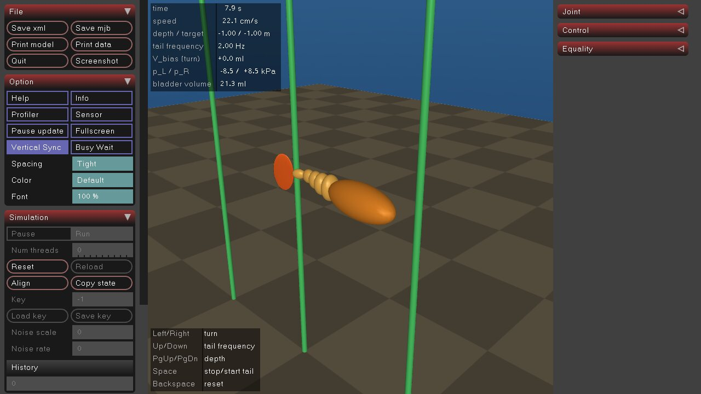
How it works
- Body. The hull is an ellipsoid on a free joint. The tail is five ellipsoids on hinge joints with springs and dampers, a pseudo-rigid-body approximation of the silicone. The caudal fin is a flat ellipsoid on the last segment.
- Water. MuJoCo's built-in ellipsoid model gives blunt and slender drag, angular drag, Kutta lift and Magnus force for each part. There is no flow field.
- Added mass, corrected. MuJoCo keeps only the gyroscopic part of the added-mass force. On its own that part pushed the fish backwards (4.5 cm/s instead of 22 cm/s). The demo switches it off and adds the added mass as joint
armatureinstead. - Buoyancy. MuJoCo does not compute buoyancy. The demo applies it to each body, with the centre of buoyancy fixed in the hull frame so that tilting produces a righting moment. The hull mass is solved for neutral buoyancy at a half-full bladder.
- Hydraulics. A Python model runs before every physics step: a first-order pump, Δp = (V_p − A·r·L)/C_h clipped at ±50 kPa, and a tendon force F = A·r·Δp spread over the three actuated joints with weights from 1 to 0.4.
- Control. A volume rhythm generator for the tail and a cascade depth PID that sets the bladder volume, followed by a rate-limited ballast pump.
Inputs
| Category | Used in the demo (fishsim/config.py) | Also possible with MuJoCo |
|---|---|---|
| Environment | water ρ 1000 kg/m³, μ 0.0009 Pa·s, step 2 ms (implicitfast), floor at −3 m | height fields, terrain meshes |
| Geometry | hull ellipsoid 0.25 × 0.10 × 0.10 m; 5 tail segments × 40 mm tapering to 0.4; fin 70 × 6 × 120 mm | MJCF or URDF files, STL/OBJ meshes |
| Joints | ±35°, actuated stiffness 0.3 N·m/rad, passive stiffness from a 3 Hz resonance, damping 0.005 N·m·s/rad | any joint type, tendons, equality constraints |
| Water model | fluidcoef = blunt 0.5, slender 0.25, angular 1.5, Kutta 1.0, Magnus 1.0; added-mass mode | deformable flex bodies (the fluid model ignores them) |
| Hydraulics | A_eff 4·10⁻⁴ m², r_eff 0.05 m, C_h 8·10⁻¹¹ m³/Pa, p_max 50 kPa, chamber 30 ml, Q_max 60 ml/s, τ_pump 30 ms | any Python model coupled through ctrl |
| Ballast and control | bladder 0–40 ml at 10 ml/s; depth PID gains; tail 2 Hz, A_V 8 ml, V_bias, K_v 10 s⁻¹ | sensors (IMU, force, touch), cameras, GPU batches (MJX) for reinforcement learning |
| Live input | viewer keys: ←/→ V_bias ±0.5 ml, ↑/↓ frequency ±0.25 Hz, PgUp/PgDn depth ±0.25 m, Space start/stop | any Python callback |
Outputs
| Output | Content | Example value |
|---|---|---|
| s1 straight swim | CSV + PNG: speed, five joint angles, p_L, p_R, Δp, tendon force, pump command | ≈22 cm/s at 2 Hz after ≈2 s |
| s2 water on/off | speed with water, without water, with MuJoCo's default added mass | 22 / 0 / 4.5 cm/s |
| s3 turning | XY trajectories for V_bias from −3 to +3 ml | ±3 ml: 6.3°/s, radius ≈1.6 m |
| s4 depth steps | depth, setpoint, bladder volume, pitch | 1 m in ≈35 s swimming, ≈6 s hovering; overshoot ≈3 cm |
| s5 frequency sweep | speed, amplitudes, pump saturation for 0.5–3 Hz | peak 23.6 cm/s at 1.5 Hz |
| s6 righting | roll, pitch and depth after a 30° roll | upright in ≈0.3 s |
| Model report | text: masses, volumes, net buoyancy, CG/CB, stability margins of the time step | hover drift 0.000 cm in 5 s |
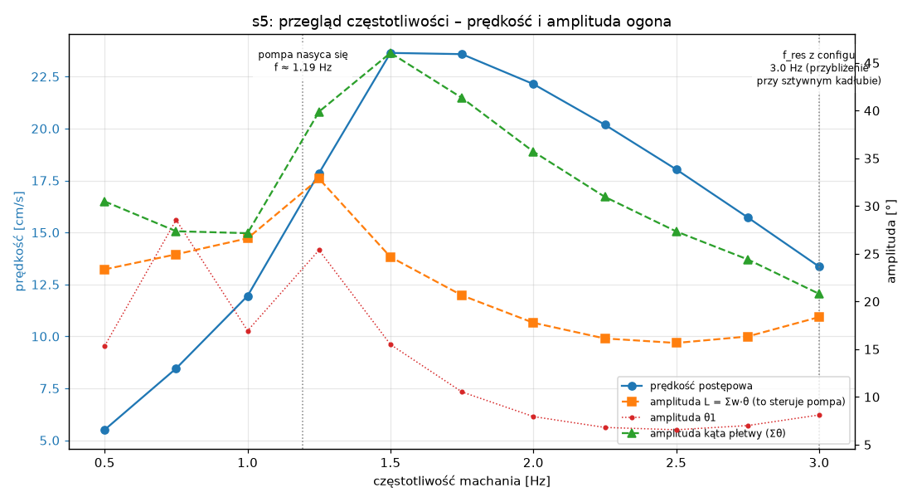
Demo stages
- 0
check_api.py: checks the API; a ball with the density of water sinks, which shows that MuJoCo has no built-in buoyancy - 1
show_model.py: static model and mass/buoyancy report - 2–5
run_scenarios.py: hover and righting, offline hydraulics, swimming with the added-mass diagnosis, turning, depth steps - 6
sweep_frequency.py: frequency sweep - 7
run_viewer.py: interactive control from the keyboard
Limitations
- No flow simulation: no wake, no vortices, no interaction between body parts through the water.
- Diagonal added mass, computed once for a straight tail, so the fish accelerates too quickly.
- The tail is rigid segments, not a continuum. The hydraulics are linear (constant C_h, ideal valve, no losses).
- No waves or free surface; buoyancy is faded out over ±5 cm near the surface as a patch.
Stonefish
A marine-robotics simulator that computes water forces from the actual surface mesh and ships sensors, ballast tanks and ocean currents. The fish has the same layout as in MuJoCo; the extra physics is written in C++.
- Method
- Bullet multibody (Featherstone) + per-triangle hydrodynamics
- Interface
- C++20 application + XML scenarios + JSON config
- Tested version
- Stonefish 1.5.0, built from source
- Install
- CMake build; OpenGL ≥ 4.3, SDL2, Freetype, GLM, OpenMP
- Speed
- 5–8× faster than real time in console mode at 2000 Hz; GUI ≈800 FPS
- Licence*
- GPL-3.0
In the program: GUI and demo video
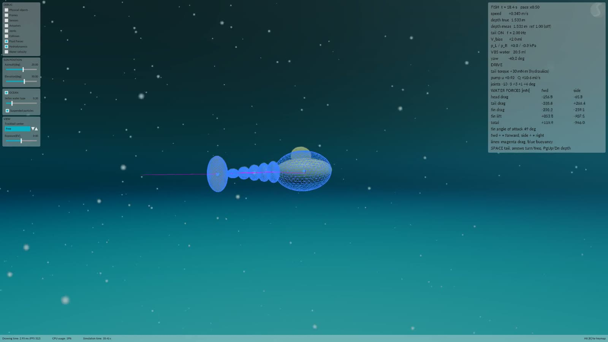
docs/media/stonefish_demo.mp4 (plays in the HTML version).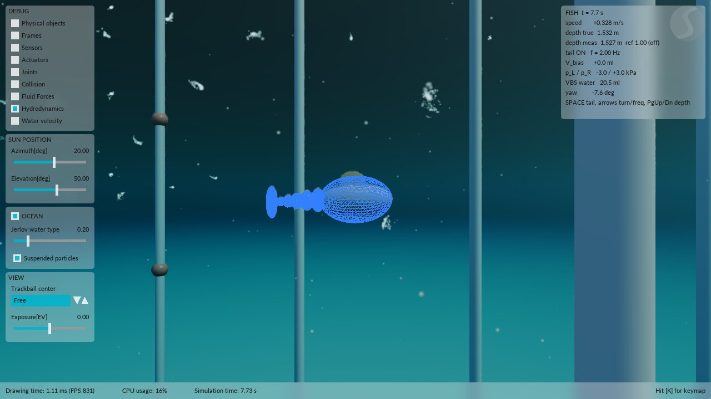
How it works
- Body. Head plus five tail links on revolute joints and a fin. The meshes are generated by
make_meshes.py(320 triangles for physics, 5120 for display), which also balances the mass and sizes the steel ballast. - Water from geometry. Buoyancy is computed from hydrostatic pressure on every triangle. Pressure drag acts per face, skin friction acts along the surface, and added mass comes from a fitted ellipsoid.
- Fixes in C++. Face drag cannot produce lift, so
FinLift.cppadds a flat-plate lift on the fin. Without it the fish reaches only 2.7 cm/s instead of 34 cm/s. The library's skin friction was about 250× too high and is replaced by a Blasius law. - Drive.
Hydraulics.cppholds the same lumped pump and chamber model as MuJoCo.TailDriver.cppapplies joint torques τ_i = w_i·F − k_i·θ_i as an internal drive (action equals reaction). - Sensors and control. The pressure sensor (50 Hz, σ 50 Pa) and the IMU (100 Hz) are noisy. The depth PID reads the filtered pressure and sets the VBS water volume; a heading PI on the IMU yaw sets V_bias.
- Ocean. Seabed, posts for visual reference, water type and a uniform current.
Inputs
| Category | Used in the demo | Also possible with Stonefish |
|---|---|---|
| Config file | config/default.json, per-scenario patches sN_*.json, single overrides --set key=value (no recompilation) | any parameter exposed by the application |
| Scenario XML | fish_base.scn: links, joints, motors, VBS, pressure sensor, IMU, encoders; world_base.scn: seabed, ocean, current | waves (GPU only), other current types, custom hydrodynamic coefficients |
| Geometry and materials | OBJ meshes; hull density 600, silicone 1100, steel ballast 7850 kg/m³ (sized automatically) | any OBJ geometry |
| Hydraulics and rhythm | same values as MuJoCo: Q_max 60 ml/s, A_V 8 ml, f 2 Hz, p_max 50 kPa; fin lift slope 2.8/rad | thrusters, rudders, servos |
| Sensors | pressure 50 Hz with σ 50 Pa; IMU 100 Hz with angle, gyro and accelerometer noise | cameras, sonar, DVL, GPS, thermal camera |
| Control and live input | depth setpoint schedule, heading PI; GUI keys for the CPG, V_bias, frequency and depth | ROS 2 interface (stonefish_ros2), not used here |
| Simulation | 2000 steps/s (2 ms was unstable), hydrodynamics every step, log every 20 steps | real-time or batch mode |
Outputs
| Output | Content | Example value |
|---|---|---|
| CSV log, 100 Hz | ≈70 columns: pose, velocities, sensor readings, joint θ/ω/τ, pump, chambers, VBS, forces per body part | full logs in results/logs/ |
| s1 hover / righting | depth drift; roll after a 30° tilt | 0.21 mm in 10 s; 30° → 10° in 5 s |
| s2 swim | speed with and without fin lift, locked tail; force balance | 34 cm/s; 2.7 cm/s without lift; fin lift 0.51 N |
| s3 turning | turning radius for V_bias ±1/±2/±3 ml | 20.4 / 10.1 / 6.6 m |
| s4 depth | true vs measured depth with the noisy sensor | 1 → 3 m: overshoot 3.3 cm, within ±5 cm after 21 s |
| s5 current | drift in a 5 cm/s side current, with and without heading control | heading held at +2.9°, yet 1 m sideways drift in 30 s |
| s6 sweep, GUI | speed vs frequency; summary.json; 3D window | peak 33.9 cm/s at 2 Hz |
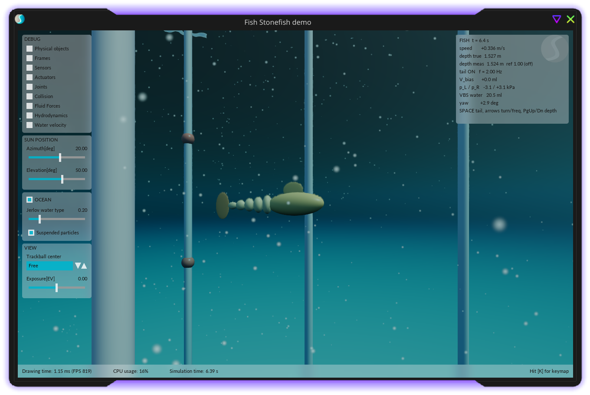
Demo stages
- 1–2Build Stonefish; generate meshes and the mass balance (
tools/make_meshes.py) - 3s1: hovering and righting
- 4s2: joints and hydraulics, diagnosing where thrust comes from
- 5s3–s5: turning, depth on the noisy sensor, side current
- 6s6: frequency sweep;
t_internalchecks that the drive is internal - 7ROS 2: skipped
Limitations
- Rigid-segment tail; quasi-static hydrodynamics with no wake, no delayed stall and no interaction between bodies.
- Added mass averaged over the axes, with no added inertia about the roll axis; friction linearised at 0.2 m/s.
- The GUI needs a GPU. Eight library pitfalls of version 1.5 are documented together with their workarounds.
PyElastica
The whole fish is one soft Cosserat rod: a centreline with a rotating frame that can bend, twist, shear and stretch. It is the cheapest way here to simulate a continuously deforming body that swims freely.
- Method
- Cosserat rod theory, explicit symplectic Position Verlet
- Interface
- Pure Python,
import elastica as ea, numba kernels - Tested version
- PyElastica 1.0.0, numba 0.68, Python 3.14
- Install
pip install -r requirements.txt, minutes- Speed
- ≈27 µs per step of a 100-element rod; 9–70 s per stage
- Licence*
- MIT
In the program: GUI and demo video
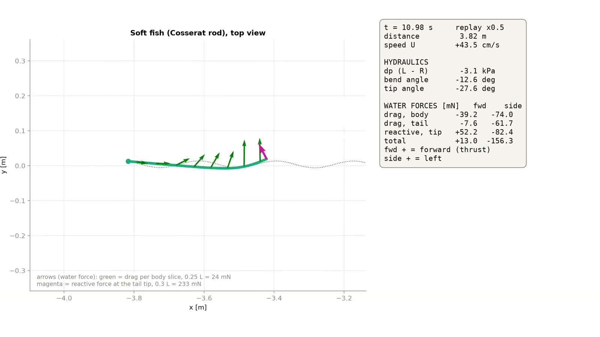
scripts/animate.py on the pyelastica branch. PyElastica has no GUI, so matplotlib draws the saved rod positions and the readouts saved in stage 4. These are the speed, Δp, the bend and tip angles, and the water forces in the fish frame: drag on the whole body and on the tail half, the Lighthill reactive force at the tip, and the total. Green arrows show the drag on each body slice; the magenta arrow shows the reactive force at the tip, on its own scale. Video file: docs/media/pyelastica_free_swim.mp4 (plays in the HTML version).How it works
- Body. A 0.40 m rod with 50 elements. Each element has an elliptical section (from a table of 7 stations), so the tail is soft sideways and stiff vertically. The head is 20× stiffer.
- Actuation from inside. The chamber pressure changes the rest curvature of the chamber zone (0.20–0.32 m): κ_rest = −A_r·Δp / B. The drive produces no net force; the centre of mass drifts only 10⁻¹⁵ m in vacuum.
- Hydraulics. The same lumped pump, chamber and valve model as in MuJoCo and SOFA, stepped every 0.2 ms and coupled through the bend angle of the chamber zone.
- Water. A custom force: quadratic Morison drag per unit length, plus the Lighthill large-amplitude reactive force at the trailing edge. The built-in Stokes slender-body model is kept only to show it is wrong at this Reynolds number (≈1.8·10⁵): its force is ≈400× too small.
- Buoyancy and depth. Per-element weight and buoyancy, a righting moment from the centre of gravity sitting below the axis, a bladder, and a cascade depth PID ported from MuJoCo.
- Time step. ≈19 µs, from the explicit stability limit of the rod.
Inputs
| Category | Used in the demo (fishrod/config.py) | Also possible with PyElastica |
|---|---|---|
| Rod | L 0.40 m, ρ 1050 kg/m³, E 0.5 MPa, ν 0.5, 50 elements | several rods joined by joints, rigid bodies |
| Shape | half-width and half-height at 7 stations (24 × 34 mm at mid-body), ellipse or circle, stiff head | any per-element radius and stiffness |
| Hydraulics | A_eff 4.3·10⁻⁴ m², r_eff 5.5 mm, C_h 4.5·10⁻¹⁰ m³/Pa, p_max 50 kPa, Q_max 160 ml/s, f 2 Hz, A_V 8 ml | built-in muscle torques, uniform torques |
| Water | model: none, drag, drag+reactive, stokes_sbt; C_n 1.2, C_t 0.01 | coupling to an immersed-boundary flow solver (SophT) |
| Buoyancy and control | CG 5 mm below the axis, bladder 0–40 ml at 10 ml/s, PID at 100 Hz, depth schedule | contact and friction with a floor |
| Stage settings | sweep grids (f 0.5–3 Hz × E ×0.5/1/2), durations, damping type | other boundary conditions and dampers |
Outputs
| Output | Content | Example value |
|---|---|---|
| e1 validation | cantilever vs theory, natural frequency, energy drift for n = 25/50/100 | n = 50: tip error 1.05 %, ω₁ error 1.8 % |
| e2 actuation | bend vs pressure and vs volume; internal-drive check | 8 ml → 15.8 kPa, 0.377 rad |
| e3 tethered | tip amplitude, phase, thrust and lateral force for each water model | thrust 149 mN with the reactive force, 5.9 mN with drag only |
| e4 free swim | speed vs time; body shape over one period; free_swim.gif | 44.1 cm/s (1.1 body lengths/s); 17 cm/s with drag only |
| e5 sweep f × E | speed, Strouhal number, tail natural frequency | softest tail at 3 Hz: 55 cm/s; f_n 1.89/2.60/3.64 Hz |
| e6 depth | depth, bladder volume, pitch, roll, speed | 1.0 → 1.5 m settles in 9.9 s, overshoot 23 cm |
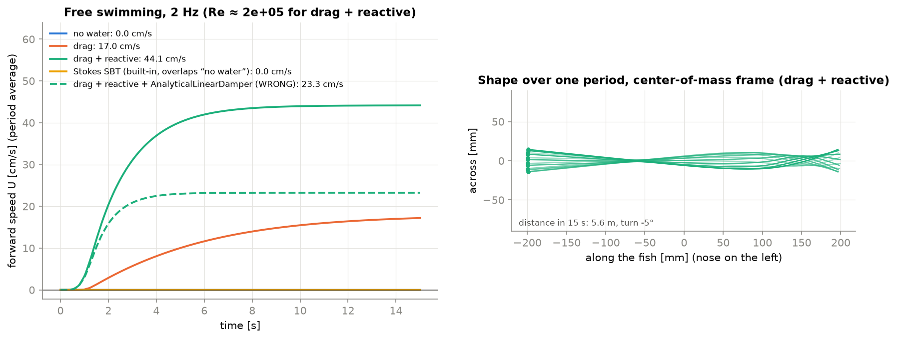
Demo stages
- 1Rod validation against beam theory, convergence in 1/n
- 2Rest-curvature actuation and hydraulic coupling; internal-drive check in vacuum
- 3Tethered tail with three water models; thrust from momentum balance
- 4Free planar swimming, comparison of water models and damping
- 5Frequency × stiffness sweep, resonance, Strouhal number
- 63D with gravity, buoyancy, bladder and depth PID while swimming
- 7Stiffness export to MuJoCo: not done
Limitations
- Local water model with no wake: the Strouhal number is too low (0.12–0.2) and speed is overestimated.
- No distributed added mass, so the natural frequency in water is too high. The section is an ellipse, not a thin fin plate.
- The chamber is reduced to A_r·Δp and C_h; elasticity is linear. A very stiff hydraulic spring breaks the explicit coupling.
SOFA + SoftRobots
A 3D finite-element model of the silicone tail with real chamber cavities. The pump prescribes the chamber volume and SOFA computes the pressure needed. The tail is clamped at the root, as on a thrust test rig.
- Method
- Corotational FEM on tetrahedra + Lagrange constraints for chambers
- Interface
- SofaPython3 scenes (
createScene), C++ engine - Tested version
- SOFA v26.06.00 binary (SoftRobots included)
- Install
scripts/setup.sh: ≈2 min + 230 MB, builds the CHOLMOD plugin- Speed
- 100–800× slower than real time (coarse mesh, one core)
- Licence*
- LGPL-2.1+ (SOFA), LGPL-3.0 (SoftRobots)
In the program: GUI and demo video
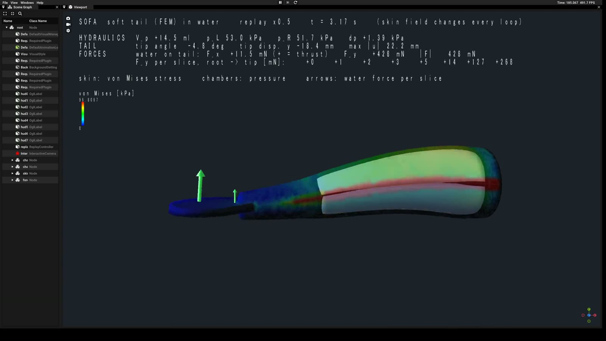
scripts/record.py, ≈30 min). The text shows the hydraulics (V_p, p_L, p_R, Δp), the tail (tip angle, tip displacement, max |u|) and the water force on the tail, in total and per slice. Green arrows draw the force on each slice, and the chambers are coloured by pressure. The skin colour changes every loop, each with its own legend: displacement [mm], water load [Pa], then von Mises stress [kPa]. The stress is computed from the recorded node positions with the same corotational model as the FEM. Video file: docs/media/sofa_gui_replay.mp4 (plays in the HTML version).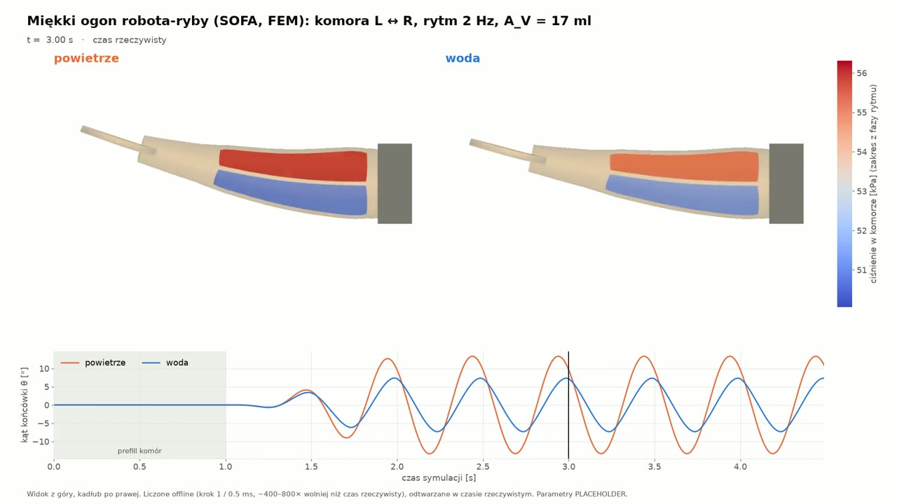
docs/media/sofa_flapping.mp4 (plays in the HTML version).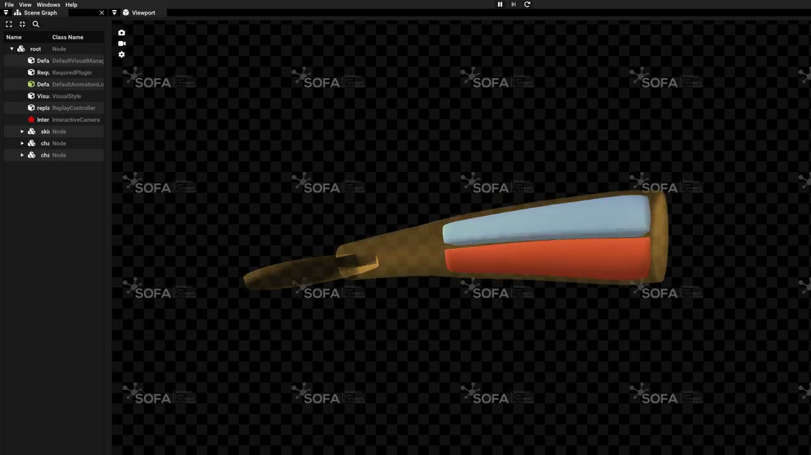
How it works
- Mesh. gmsh builds the tail with two cavities. The coarse level has 28 112 tetrahedra and 7 744 nodes; the fine level has 142 096 tetrahedra.
- Material. Corotational linear elasticity (large rotations, small strains), E 0.3 MPa, ν 0.45. The default design V4 adds a spine 20× stiffer in the septum and tension-only hoop fibers every 4 mm.
- Chambers.
SurfacePressureConstraintin volume-growth mode: the pump sets the volume, and the constraint solver returns the pressure. - Solver. Implicit Euler, a Gauss–Seidel constraint solver and the CHOLMOD sparse Cholesky factorisation (4–15× faster than LDL). Static curves are found pseudo-statically, holding each point until the motion dies out.
- Water. Custom quadratic normal drag and tangential friction on every skin triangle, applied explicitly; the silicone weight is reduced by buoyancy. There is no added mass, lift or wake.
- Hydraulics. A port of the MuJoCo rhythm with pump-lag compensation (without it the volume overshoots by 16 % at 2 Hz), a closed circuit and a 20 ml prefill.
Inputs
| Category | Used in the demo (fishsofa/config.py) | Also possible with SOFA |
|---|---|---|
| Geometry | tail 0.20 m, section 60 × 80 mm tapering to 0.4, fin 70 × 120 × 6 mm; two chambers 0.12 m long, 4 mm wall, 4 mm septum (91 ml each) | any Gmsh, STL, OBJ or VTK mesh; XML .scn scenes |
| Material | E 3·10⁵ Pa, ν 0.45, ρ 1100; spine E × 20; fibers 2·10⁵ N/m every 4 mm | hyperelastic materials, beams (BeamAdapter) |
| Actuation | f 2 Hz, A_V 17 ml, prefill 20 ml, Q_max 250 ml/s, p_max 50 kPa | pressure control, cable actuators, inverse control (SoftRobots.Inverse) |
| Environment | air or water; drag coefficients C_n 1.0, C_t 0.01 | contact and collision |
| Numerics | step 2 ms (0.5–1 ms in water), Rayleigh damping, solver cholmod/ldl/cg/warp, mesh level test/coarse/medium/fine | model order reduction (up to ≈50× faster) |
| Run control | environment variables FISHSOFA_LEVEL, _MODE, _ENV, _WORKERS | GUI interaction |
Outputs
| Output | Content | Example value |
|---|---|---|
| s1 mesh and sag | mesh quality report; tip sag under own weight on three meshes | −40.5 mm (coarse) to −41.2 mm (fine) |
| s2a design variants | bend for homogeneous, spine, thick wall, fibers, spine + fibers | 1.3° homogeneous vs 31° for V4 |
| s2 p–V curve | pressure and tip angle vs chamber volume, mesh convergence | 50 ml: 16.1 kPa and 15.4° (fine mesh) |
| s3 symmetry | left vs right chamber | error ≤ 0.75 % in angle |
| s4 flapping in air | angle, pressures, volume conservation, solver iterations | ±12.7° at 2 Hz, |Δp| ≤ 5.7 kPa |
| s5 water vs air | amplitude, phase, tethered thrust, lateral force, drag power | ±7.3° in water (0.55× air); thrust 66.7 mN |
| s6 sweeps, video | frequency and Young's modulus sweeps; flapping.mp4 1080p60 | max thrust 67.9 mN at 2.25 Hz |
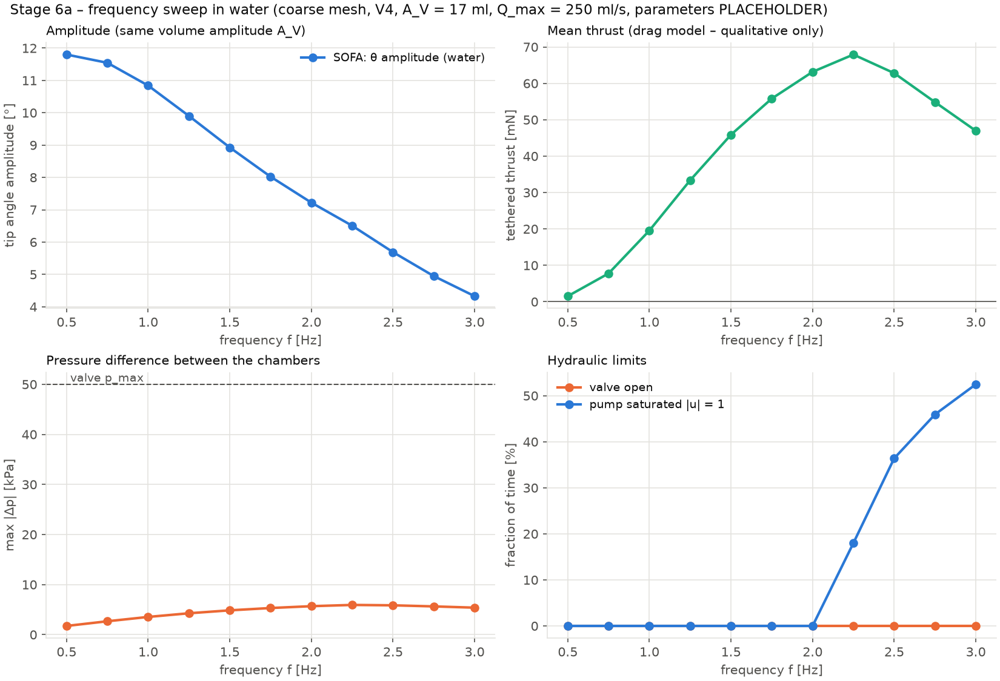
Demo stages
- 0Component check; meaning, sign and units of the chamber volume constraint (≈2.5 min)
- 1Meshes and sag under own weight (≈10 min)
- 2Design variants V0–V4; p–V and angle curves, mesh convergence (≈35 min)
- 3Left/right symmetry (≈3 min)
- 4Antagonistic flapping in air (≈25 min)
- 5Water vs air, tethered thrust (30–60 min)
- 6Frequency and stiffness sweeps, 19 runs (≈1 h on 12 threads)
Limitations
- No flow and no reactive force, so the thrust is qualitative. The tail is clamped; the fish does not swim.
- Linear tetrahedra lock in thin walls, which overestimates pressure by 15–25 %. The material is corotational linear, not hyperelastic.
- Slow: explicit drag limits the step to 0.5 ms in water. A bug in SOFA v26.12-dev keeps the demo on v26.06.
- Exporting equivalent joint stiffnesses to MuJoCo (stage 7) was not done.
OpenFOAM + preCICE + CalculiX
The only demo that solves the actual water flow. A CFD solver and a structural FEM solver exchange forces and displacements every time step until they agree. It is a 2D slice of the tail with the head held fixed.
- Method
- Partitioned FSI: finite volumes + nonlinear FEM, implicit coupling
- Interface
- OpenFOAM dictionaries, CalculiX
.inp, preCICE XML; Bash and Python tools - Tested versions
- OpenFOAM v2606, CalculiX 2.20, preCICE 3.4.1
- Install
setup.sh, ≈1.5 h, mostly built from source- Speed
- 0.6–1 s per 2.5 ms window; stages 4–6 take 3 h 47 min
- Licence*
- GPL-3.0 (OpenFOAM), GPL-2.0+ (CalculiX), LGPL-3.0 (preCICE)
In the program: GUI and demo video
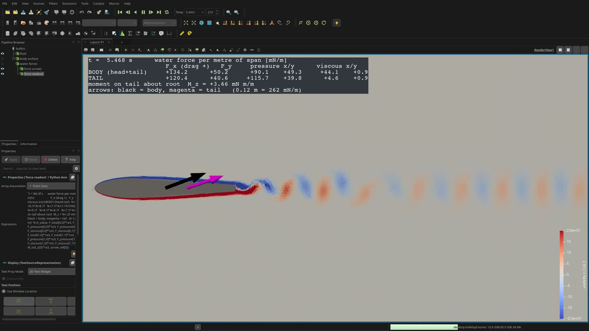
tools/pv_gui.py adds a text box that follows the animation time, read from the forces function objects. It shows the water force on the body and on the tail (total, pressure and viscous parts, in mN per metre of span) and the moment on the tail about its root. Arrows show the total force at the centroids of the body (black) and the tail (magenta). The case was re-run for this report with OpenFOAM v2512 in the official container: 20 665 cells, 90 s on 4 cores. Video file: docs/media/openfoam_paraview_demo.mp4 (plays in the HTML version).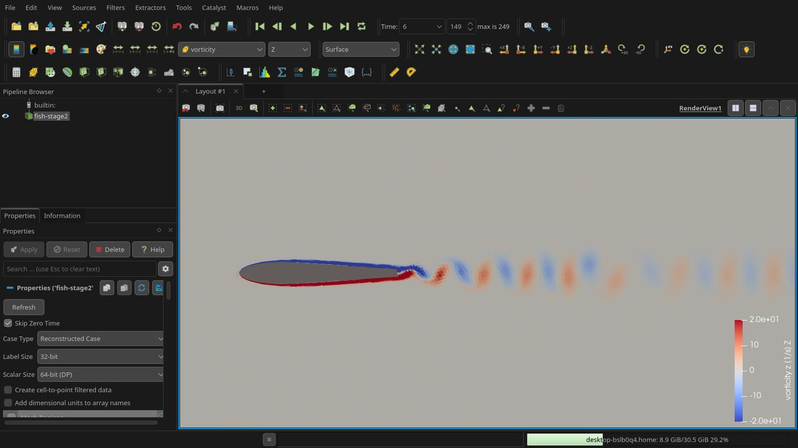
How it works
- Fluid.
pimpleFoamsolves incompressible laminar Navier–Stokes in 2D (one cell deep, so forces are per metre of span) on a mesh that deforms with the tail. - Solid. CalculiX runs dynamic nonlinear FEM (large deformations, linear elastic silicone, E 0.3 MPa) of a tail with PneuNet-style chambers.
- Coupling. preCICE maps fluid forces onto the solid and solid displacements onto the fluid mesh, and repeats each 2.5 ms window with the IQN-ILS quasi-Newton method until both agree (4.7 iterations on average).
- Why implicit. Silicone is almost as dense as water, so explicit coupling is unstable for any time step (the added-mass effect). Stage 3 shows the force growing 13× per window.
- Actuation. Prescribed chamber pressure p_L = P0·max(0, sin 2πft), with the opposite half-wave in p_R. Pressure is the input, not volume.
- Thrust. The cycle-averaged axial force on the fixed body (head + tail).
Inputs
| Category | Used in the demo | Also possible with this toolchain |
|---|---|---|
Geometry (params.py) | tail 0.15 m, thickness 30 → 10 mm, chambers at 10–110 mm, 3 mm walls, 10 cells per side; head half-ellipse 60 mm; domain 3L upstream, 8L downstream | full 3D geometry |
| Materials and water | E 3·10⁵ Pa, ν 0.45, ρ 1070 kg/m³; water ρ 1000, ν 10⁻⁶ m²/s | hyperelastic material, material damping (CalculiX) |
Case (new-fsi-case.sh) | inflow speed U, time step, end time, P0, frequency, implicit/explicit coupling | free body with a 6-DOF solver |
| OpenFOAM setup | PIMPLE + GAMG, Laplacian mesh motion, force and vorticity function objects, inlet ramp, slip sides | RANS/LES turbulence, overset or remeshing for large amplitude |
| CalculiX setup | fsi.inp: nonlinear dynamics, HHT α −0.2, PARDISO solver, pressure amplitude tables | contact between chamber walls |
| preCICE setup | RBF mapping (5 mm radius), IQN-ILS, convergence 10⁻³, tip watch point | more participants, e.g. a volume-driven hydraulics model |
| Mesh | gmsh, refinement via MESH_SCALE (0.7 / 1.0 / 1.4) | any OpenFOAM mesh generator |
Outputs
| Output | Content | Example value |
|---|---|---|
| Flow fields | velocity, pressure, vorticity, time averages for ParaView | Kármán vortex street behind the body |
| Forces | pressure and viscous force and moment per patch (head, tail) | rigid body at 0.2 m/s: drag 0.13 N/m, ⅔ pressure |
| E1 dry tail | tip deflection vs pressure, L/R symmetry | 1.2 mm/kPa; 24 mm (16 % of L) at 20 kPa |
| E3 coupling | explicit vs implicit stability | explicit diverges; implicit stable |
| E4 actuated | tip amplitude in water vs dry, thrust per cycle | 28.3 mm in water vs 20 mm dry at 1 Hz |
| E5 inflow | mean axial force and Strouhal number vs speed | net drag at 0.05–0.2 m/s; zero only near 0.02 m/s |
| E6 frequency | amplitude and thrust vs frequency | resonance in water ≈1 Hz (dry 3.39 Hz) |
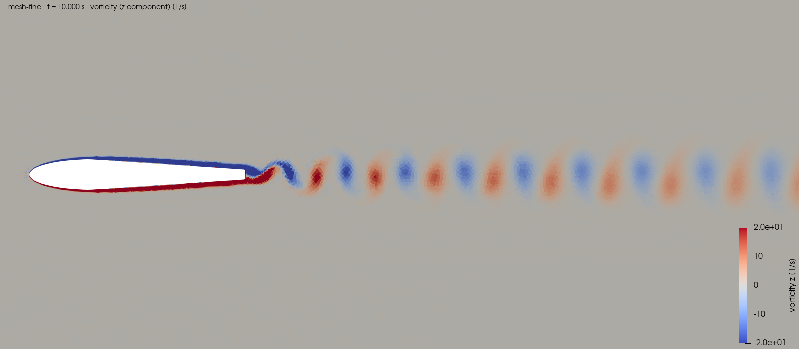
Demo stages
- 0Official perpendicular-flap tutorial, to validate the install (34 s)
- 1Solid only: deflection vs pressure (≈10 s)
- 2Fluid only, rigid body: drag and mesh convergence (7 min)
- 3Passive tail: explicit vs implicit coupling (10 min)
- 4Actuated tail in still water vs dry (16–80 min)
- 5Inflow at 0.05/0.1/0.2 m/s (≈30 min each)
- 6Frequency sweep 0.5–2 Hz (16–102 min each)
Limitations
- 2D: no tip vortices, and forces are per metre of span. Laminar flow at Re ≈ 4·10⁴.
- Fixed head, so no free swimming or recoil. Actuation is by pressure, not volume. No material damping.
- Mesh deformation limits the tip amplitude to ≈15 % of L. Two uniform chambers make a standing wave and a blunt tip, so the tail produces net drag.
- Slow and the most complex of the six to install.
OpenModelica
An equation-based model of the whole drive train, from the battery through the motor, pump, pipes and chambers to a one-degree-of-freedom tail. It is the only demo with electrics, an energy budget, FMU export and a full calibration workflow.
- Method
- Acausal Modelica equations → DAE → C code, variable-step solver
- Interface
- Modelica (OMEdit GUI), Python through OMPython and FMPy
- Tested version
- OpenModelica 1.27.1, MSL 4.1.0
- Install
- apt repository (
install_system.sh) + venv (install_user.sh) - Speed
- 16 simulations ≈0.2 s after ≈1 s of compilation
- Licence*
- OSMC-PL / GPL-3 (OpenModelica), BSD-3 (MSL)
In the program: GUI and demo video
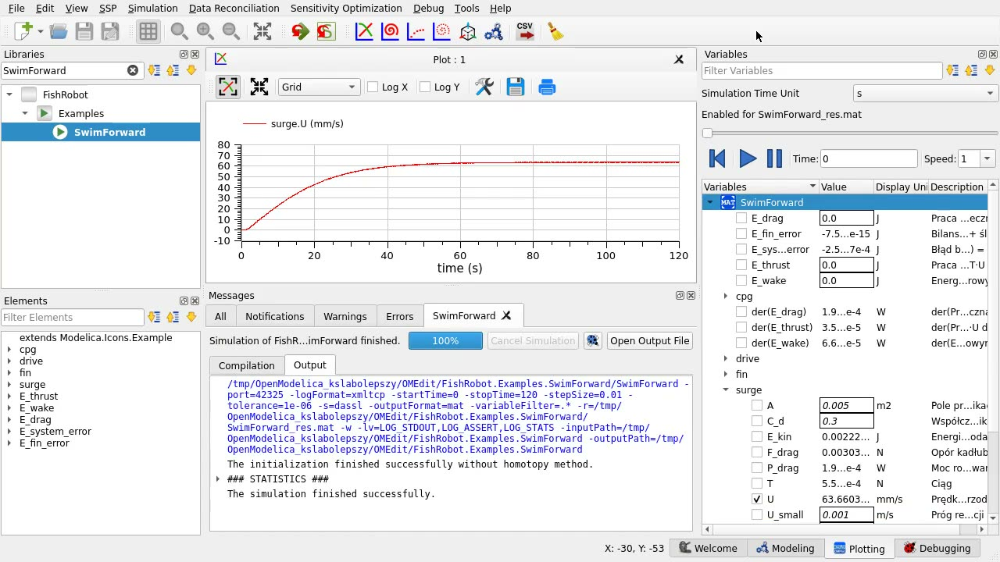
docs/media/openmodelica_demo.mp4 (plays in the HTML version).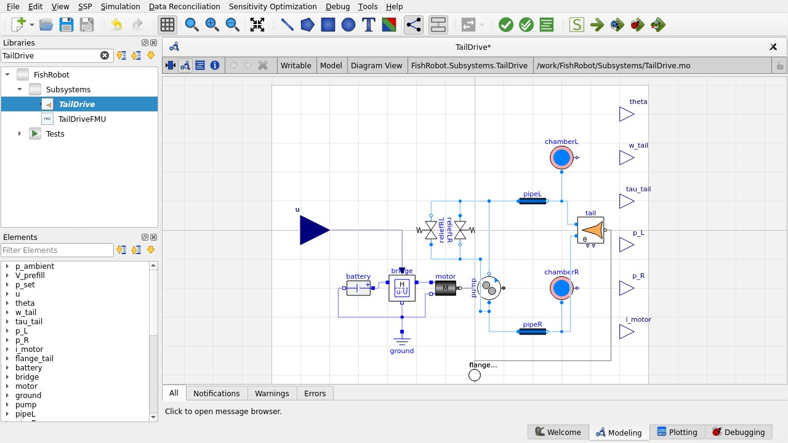
FishRobot.Subsystems.TailDrive: battery, H-bridge, motor, pump, pipes, two chambers, relief valves and the tail.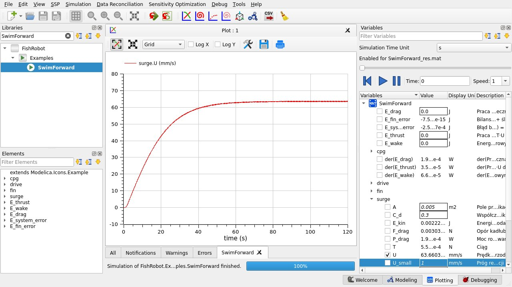
How it works
- Acausal components. Parts are joined by physical connectors. The custom hydraulic port carries pressure p and flow V_flow, whose product is power. The compiler sorts the equations itself, so there is no input/output wiring.
- Drive chain. 2S LiPo battery 7.4 V → H-bridge → DC motor → gear pump (Q = D·ω − k_leak·Δp) → pipes (laminar plus Haaland turbulent friction, minor losses) → chambers with a nonlinear p–V table → relief valves.
- Tail and fin. The tail is a rotary piston with one degree of freedom: (J + J_added)·θ̈ = τ − kθ − cθ̇ − c_h|θ̇|θ̇. Thrust comes from Lighthill's rigid-fin formula and drives a surge equation.
- Ballast. A motor and lead screw drive a syringe piston; a heave equation and a cascade depth PID close the loop.
- Energy. Every loss is integrated, and the balance closes to ≈10⁻⁶.
- Export and calibration.
TailDriveexports as an FMU 2.0 for co-simulation. Ten bench models andcalibrate.py(least squares) identify the parameters step by step, from the motor to the water.
Inputs
| Category | Used in the demo | Also possible with Modelica |
|---|---|---|
| Electrical | battery 7.4 V, R_int 0.05 Ω, 16.3 Wh; motor R 1 Ω, L 0.5 mH, k 0.01 N·m/A, rotor inertia | SoC-dependent voltage, PWM losses, thermal models |
| Hydraulic | pump 0.3 ml/rev, leakage, η 0.8; pipe 0.2 m × 4 mm, ζ 1.5, roughness 25 µm; valve 50 kPa; chamber p–V table (11 points or a CSV file) | Modelica.Fluid and media, compressible or two-phase (a variant is already in HydraulicsFluid/) |
| Tail and fin | displacement 2·10⁻⁵ m³/rad, k 2 N·m/rad, inertia, added inertia, damping; fin span 0.06 m, C_T 1.0 | a p–V curve from SOFA or from measurement |
| Body and ballast | m 1 kg, added mass, C_d 0.3, area 0.005 m²; syringe 20 mm × 40 mm (12.5 ml), lead 1 mm | multibody library for 3D motion |
| Control | CPG amplitude 0.8, 1.5 Hz, bias; depth PID gains | any block-diagram controller |
| Measured data | CSV files for calibrate.py: motor step, pump, pipe, chamber cycles, valve, tail, thrust, hull tow and coast-down, ballast | tables from .mat/.txt, FMU import |
| Run time | -override parameters, OMEdit modifiers | solver choice: DASSL, IDA, CVODE, Euler |
Outputs
| Output | Content | Example value |
|---|---|---|
| Time series (.mat) | every variable: p_L, p_R, flows, currents, motor speed, θ, thrust, speed, depth, ballast volume | valve opens at ≈51 kPa (HydraulicsStep) |
| Energy budget | loss per component, mechanical output, stored energy, balance error | 1.8 W at 1 Hz → ≈9.2 h on 16.3 Wh |
| Swimming | surge speed, thrust, battery power vs frequency | best 8.5 cm/s at 0.5 Hz; 16.6 W at 4 Hz |
| Depth control | depth, piston position, current | 3 cm/s descent, 6 % overshoot, 5 mm error |
| FMU | TailDrive.fmu (linux64, 1.8 MB) + comparison with OpenModelica | difference 0.016 % of amplitude |
| Calibration reports | fitted parameters with 1σ uncertainty and correlation matrix | e.g. hull C_d 0.402 ± 0.9 % (synthetic data) |
Demo stages
- 1–2Pipe, chamber and relief valve with tests (laminar, turbulent vs MSL, closed loop)
- 3–4Battery, H-bridge, motor, pump; tail, CPG and the TailDrive subsystem; frequency sweep
- 5–7Energy budget; ballast and depth control; fin and surge, forward swimming
- 8–9FMU export and FMPy loop;
Modelica.Fluidvariant (same results within 0.5 %, 6× slower) - 10Calibration benches and
calibrate.pyfor 10 subsystems
Limitations
- The tail has one degree of freedom (no travelling wave); thrust is a placeholder Lighthill formula.
- Surge, heave and yaw are not coupled; drag and added mass are constants.
- Lumped incompressible hydraulics without hysteresis; ideal electrics. The FMU runs only on the OS it was built on.
4 · From CAD to simulation, and setting parameters
None of the six demos imports a CAD file today. MuJoCo, Stonefish and PyElastica build the fish from simple shapes or a table of sections in code; SOFA and OpenFOAM generate the tail parametrically in gmsh; OpenModelica uses no geometry at all. Once a CAD model of the real robot exists, each tool needs something different from it. This section shows what, how to get it there, and how the physical and numerical parameters are chosen and set.
What each tool needs from the CAD model
CAD import, tool by tool
| Tool | What it needs | Formats | Path from CAD | Watch out for |
|---|---|---|---|---|
| MuJoCo | one rigid body per part (hull, each tail segment, fin), with mass and inertia | STL, OBJ as <mesh> assets in MJCF; URDF | Split the tail into segments in CAD, export each part to STL/OBJ in metres, add it as a mesh geom. Mass and inertia come from the mesh and a density, or are typed in from CAD mass properties. A URDF exported from CAD can be loaded and saved as MJCF. | Collisions use the convex hull of each mesh. The fluid model sees only an equivalent ellipsoid per geom, not the mesh shape. Buoyancy still has to be added by the user (as the demo does). |
| Stonefish | a closed, low-poly physics mesh and a smooth visual mesh per link | OBJ (used here), referenced from the .scn XML | Export each link to OBJ, decimate the physics copy to a few hundred triangles (the demo uses 320), keep a fine visual copy. tools/make_meshes.py shows the workflow with trimesh + manifold3d: watertight check, volumes, mass balance, ballast sizing, XML filled from templates. | Buoyancy, drag and added mass are computed per triangle, so the mesh must be closed with outward normals. More triangles make every step slower. Materials may be defined only in the main scenario file. |
| PyElastica | no mesh: a centreline and one cross-section per element | none (numbers in fishrod/config.py) | Slice the CAD body at stations along its length (for example trimesh.section), read the half-width a(s) and half-height b(s), or compute area and second moments directly, and fill the profile table. | The rod cannot contain cavities. The chambers enter only through A_r (bend per pressure) and C_h (compliance), which are better measured than computed. |
| SOFA | a tetrahedral volume mesh of the silicone and a closed triangle surface for each chamber cavity | .msh (Gmsh), .vtk (legacy 4.2), STL/OBJ surfaces | In gmsh replace the parametric geometry of fishsofa/mesh_gen.py (already built with the OCC kernel) by gmsh.model.occ.importShapes("tail.step"). Define physical groups for the clamped root face and the cavity walls, then mesh. | Use at least 2–3 elements through each thin wall: with 1–2 linear tetrahedra the pressure comes out 15–25 % too high. VTK 5.1 crashes MeshVTKLoader. Each cavity surface must be closed. |
| OpenFOAM + CalculiX | fluid: a mesh of the water around the body with named patches; solid: a FEM mesh of the tail with node sets | fluid: STL for snappyHexMesh, or .msh via gmshToFoam (used here); solid: CalculiX .inp | Fluid: export the body surface to STL and mesh with blockMesh + snappyHexMesh (3D), or import STEP into gmsh as in tools/make_geometry.py. Solid: mesh in gmsh or FreeCAD FEM and write .inp with sets for the clamped root, the wet surface (coupling) and the chamber faces (pressure load). | Patch and set names must match preciceDict and config.yml. The fluid mesh deforms with the tail, which limits the tip amplitude to ≈15 % of L. A 2D case needs a one-cell-thick extrusion. |
| OpenModelica | no geometry; lumped values only | none for physics; MultiBody can show STL shapes for visualisation | Read numbers off the CAD model: masses, inertias, centre of buoyancy, chamber volume and its change per radian of bend (D_tail = dV/dθ), pipe lengths and bores, syringe bore and stroke. | The chamber p–V curve depends on the silicone, not only on the shape: take it from SOFA or from a syringe test (the model already reads it from CSV). |
How the parameters are chosen
Every value in the demos is a placeholder. Real values come from five sources, used in this order:
- Datasheets: motor R, L, k and rotor inertia, pump displacement, battery voltage and capacity, sensor rates and noise.
- CAD mass properties: masses, volumes, centres of gravity and buoyancy, inertias, chamber volume.
- Material tests: silicone density and Young's modulus (tensile or indentation test of a cast sample).
- Bench identification, following the energy flow: motor → pump → pipe → chamber → valve → tail statics → tail dynamics → thrust → hull → ballast. Each step fixes a few parameters with the previous ones already known. This is the 11-step procedure of the OpenModelica demo (
calibrate.py), and the same experiments serve the other tools. - Detailed models as references for simple ones: the SOFA p–V curve fills the OpenModelica chamber table; OpenFOAM tip amplitude, added mass and thrust check the water coefficients of MuJoCo, Stonefish and PyElastica.
Numerical parameters (time step, mesh size, number of elements) are not physics. They are chosen by a stability rule and checked by a convergence test, never tuned to match a result. The Stonefish demo states the rule plainly: when the first version swam at 0.3 cm/s, the cause was diagnosed instead of tuning coefficients until the fish moved.
| Tool | Time step | Mesh or discretisation |
|---|---|---|
| MuJoCo | 2 ms, implicitfast; stiffest mode ω_n·dt ≈ 0.05 (rule: < 0.5) | 5 tail segments (from the design, not from convergence) |
| Stonefish | 0.5 ms: explicit joint springs need ω·dt < 2, and 2 ms exploded; 4000 Hz gives the same speed | physics mesh of 320 triangles per body |
| PyElastica | dt < min(Δl/c, Δl²/(r·c)) ≈ 19 µs, computed automatically | n = 50 elements: ≈1 % error against beam theory |
| SOFA | 2 ms in air; 0.5 ms in water, from the explicit drag rule c·dt/m < 0.5 | coarse/medium/fine; coarse overestimates pressure by 20–27 % against fine |
| OpenFOAM FSI | 2.5 ms, identical in OpenFOAM, CalculiX and the preCICE window | three meshes: 1.0 % drag change between the two finest; 1.5× domain changes drag by 3.8 % |
| OpenModelica | variable step (DASSL), tolerance 10⁻⁶ | none; nominal attributes scale the variables |
How the parameters are set, and which experiment identifies them
| Tool | Where they live | How to change them | Computed automatically | Identified by (plan in the README) |
|---|---|---|---|---|
| MuJoCo | FishConfig dataclass, fishsim/config.py | edit the file, or FishConfig(tail_freq=1.5) in Python; the MJCF model is regenerated | hull mass (neutral at half bladder), fore-aft centre of buoyancy (trim), passive joint stiffness (from a 3 Hz resonance) | tail on a bench (pressure vs angle → A·r, joint k, C_h); tail in water (resonance, damping); tethered thrust; pool video (speed → C_blunt, C_slender; turning → C_Kutta); underwater weighing of the bladder |
| Stonefish | config/default.json + scenario patches config/sN_*.json | edit the JSON or pass --set rhythm.freq=1.5; no recompilation | steel ballast mass and position, neutral VBS volume, mesh volumes (make_meshes.py) | the MuJoCo procedure unchanged, plus roll damping and turning radius |
| PyElastica | dataclasses in fishrod/config.py (Rod, Fish, Hydraulics, Water, Buoyancy, stages) | edit, or HydraulicsConfig(tail_freq=1.5) in a script | stable time step, bladder position, section stiffness matrices | bend vs pressure and volume (A_r, C_h, E); natural frequency and damping in air and water; tethered thrust and pool speed (C_n, C_t, reactive coefficient); depth step (bladder pump, PID) |
| SOFA | TailConfig in fishsofa/config.py; environment variables FISHSOFA_* | edit, e.g. young_modulus, tail_freq; the mesh is regenerated and cached by a hash of the geometry | meshes, cavity volumes, mass of the water in the chambers | syringe into one chamber in 5 ml steps with a pressure gauge and a top-view photo: fit E to the p–V curve, then the spine factor and hoop stiffness to the angle–volume curve; thrust on a scale in a tub |
| OpenFOAM FSI | tools/params.py (geometry, materials); system/caseParams; dictionaries; fsi.inp; precice-config.xml | new-fsi-case.sh --u 0.1 --p0 15000 --freq 1.5 --coupling implicit writes a new case | meshes (gmsh), actuation pressure tables (make_actuation.py) | head on a one-axis load cell in a tank, camera above: mean axial force, tip amplitude dry and in water, inflow speed of zero mean force → E and damping |
| OpenModelica | parameter declarations in the .mo files | OMEdit parameter dialog, modifiers such as cpg(f=1.5), or -override cpg.f=1.5 at run time (OMPython for scripts) | chamber p–V curve from a CSV file, energy terms | calibrate.py with 10 bench models (motor, pump, pipe, chamber, valve, tail static and dynamic, thrust, hull tow and coast-down, ballast): least squares with 1σ uncertainty and correlation matrix |
5 · Comparison
Capability matrix
| Capability | MuJoCo | Stonefish | PyElastica | SOFA | OpenFOAM FSI | OpenModelica |
|---|---|---|---|---|---|---|
| Free swimming of the whole fish | ● | ● | ● | ○clamped | ○head fixed | ◐surge + heave |
| Soft tail deformation | ◐5 segments | ◐5 segments | ◐continuous rod | ●3D FEM | ●2D FEM | ○1 DOF |
| Chamber pressure from structure | ◐constant C_h | ◐constant C_h | ◐constant C_h | ● | ◐pressure is input | ◐p–V table |
| Water flow, wake, vortices | ○ | ○ | ○ | ○ | ● | ○ |
| Hydrodynamic forces | ◐ellipsoid model | ◐per mesh face | ◐Morison + Lighthill | ◐drag only | ●Navier–Stokes | ◐Lighthill + C_d |
| Added mass | ◐diagonal | ◐axis-averaged | ◐trailing edge | ○ | ●from the flow | ◐constant |
| Pump and valve dynamics | ◐ | ◐ | ◐ | ◐ | ○ | ● |
| Electrics and energy budget | ○ | ○ | ○ | ○ | ○ | ● |
| Buoyancy and depth control | ● | ● | ● | ○ | ○ | ◐1D heave |
| Noisy sensors | ○possible | ● | ○ | ○ | ○ | ○ |
| Currents and environment | ○ | ● | ○ | ○ | ◐inflow | ○ |
| Interactive 3D view | ● | ● | ○GIF | ● | ◐ParaView, after the run | ○plots |
| Real time or faster | ● | ●5–8× | ◐≈1.5× slower | ○100–800× slower | ○hours | ●milliseconds |
| Parameter identification | ○plan only | ○ | ○plan only | ○plan only | ○ | ●calibrate.py |
| Co-simulation / export | ○ | ◐ROS 2 possible | ○ | ○ | ●preCICE | ●FMU 2.0 |
Inputs at a glance
| Input | MuJoCo | Stonefish | PyElastica | SOFA | OpenFOAM FSI | OpenModelica |
|---|---|---|---|---|---|---|
| Geometry | MJCF generated in Python | OBJ meshes + .scn XML | station table in Python | gmsh → VTK + OBJ | gmsh → OpenFOAM mesh + CalculiX mesh | none (lumped parameters) |
| Material | densities, joint stiffness | densities, joint stiffness | E, ν, ρ per element | E, ν, ρ, fibers, spine | E, ν, ρ | tail k, J, c |
| Hydraulics | lumped (A, r, C_h) | lumped (A, r, C_h) | lumped (A_r, C_h) | volume per chamber | pressure per chamber | component parameters + p–V table |
| Water | fluidcoef | from the mesh + lift slope | C_n, C_t, model choice | C_n, C_t | ρ, ν, inflow U | C_d, C_T, added mass |
| Config format | Python dataclass | JSON + XML | Python dataclass | Python dataclass + env vars | dictionaries, .inp, XML | Modelica parameters |
| Live control | keyboard | keyboard | none | GUI | none | none |
Outputs at a glance
| Output | MuJoCo | Stonefish | PyElastica | SOFA | OpenFOAM FSI | OpenModelica |
|---|---|---|---|---|---|---|
| Main quantity | speed, trajectory, depth | speed, trajectory, sensor readings | speed, body shape, thrust | pressure, bend, tethered thrust | flow field, forces, wake | currents, pressures, energy |
| Data format | CSV | CSV 100 Hz + JSON | CSV | CSV + NPZ | OpenFOAM fields, .frd, logs | .mat, CSV |
| Visual | viewer, PNG | 3D GUI, PNG | PNG, GIF | GUI, MP4 | ParaView, PNG | PNG plots |
| Live readouts on screen | overlay: state, drive, water force per body; force arrows | panel: state, drive, drag per part, fin lift; library force lines | animation panel: speed, Δp, angles, drag, reactive force; arrows | text: hydraulics, tail, force per slice; arrows; skin coloured by displacement, load or von Mises stress | ParaView text: force on body and tail, tail moment; arrows | OMEdit: plot of any variable after the run |
Same fish, different speeds: why
At about 2 Hz the three free-swimming demos give speeds that differ by 2×. The difference comes from where each tool gets its thrust.
| Tool | Speed near 2 Hz | Main source of thrust in the model |
|---|---|---|
| MuJoCo | 22 cm/s | Kutta lift on ellipsoids from the built-in model |
| Stonefish | 34 cm/s | flat-plate fin lift added in C++ |
| PyElastica | 44 cm/s | Lighthill reactive force at the trailing edge |
| OpenModelica | 7.3 cm/s | Lighthill rigid fin on a 1-DOF tail (only 3.4° amplitude at 2 Hz) |
| SOFA | tethered | drag on skin triangles: 63 mN at 2 Hz |
| OpenFOAM FSI | tethered | resolved flow: net drag with this tail shape |
Cost of use
| Tool | Install | Typical run | Skills needed |
|---|---|---|---|
| MuJoCo | pip, minutes | seconds to minutes | Python |
| Stonefish | build from source, GPU for the GUI | 1–2 min for all scenarios | C++, XML |
| PyElastica | pip, minutes | 9–70 s per stage | Python, rod mechanics |
| SOFA | script, ≈2 min + compiler for CHOLMOD | 10 min to 1 h per stage | Python, FEM, meshing |
| OpenFOAM FSI | ≈1.5 h, three programs and adapters from source | 7–102 min per case | CFD, FEM, coupling |
| OpenModelica | apt repository + venv | under a second | Modelica |
How the tools fit together
6 · Glossary
| English | Polish | Meaning here |
|---|---|---|
| added mass | masa dodana | water that has to be accelerated together with the body; in the FSI demo it lowers the tail resonance from 3.39 Hz to ≈1 Hz |
| corotational FEM | MES korotacyjna | linear elasticity that handles large rotations (SOFA) |
| Cosserat rod | pręt Cosseratów | 1D continuum that bends, twists, shears and stretches (PyElastica) |
| CPG (rhythm generator) | generator rytmu | controller that produces the periodic volume command for the tail |
| FMU | FMU (Functional Mock-up Unit) | packaged model that other tools can run (OpenModelica export) |
| FSI | interakcja płyn–struktura | coupled simulation of water flow and a deforming solid (OpenFOAM + CalculiX) |
| identification | identyfikacja parametrów | fitting model parameters to bench measurements (OpenModelica calibrate.py) |
| IQN-ILS | IQN-ILS (quasi-Newton) | method preCICE uses to make implicit coupling converge |
| Lighthill reactive force | siła reakcyjna Lighthilla | thrust from the water pushed sideways by the trailing edge |
| PRBM | model pseudo-sztywny | soft tail approximated by rigid segments and springs (MuJoCo, Stonefish) |
| p–V curve | krzywa ciśnienie–objętość | chamber pressure as a function of the water volume pumped in |
| relief valve | zawór przelewowy | valve that opens at |Δp| = 50 kPa to protect the chambers |
| STEP | STEP | neutral CAD exchange format (ISO 10303); gmsh imports it directly |
| Strouhal number | liczba Strouhala | St = f·A/U; efficient fish swim at St ≈ 0.2–0.4 |
| tethered | na uwięzi | body held in place while thrust is measured (SOFA, OpenFOAM) |
| VBS | układ zmiennej pływalności | variable buoyancy system: a tank whose water volume sets depth (Stonefish) |
| watertight mesh | siatka szczelna (zamknięta) | closed surface with no holes; needed for buoyancy in Stonefish and cavities in SOFA |
* Licences are not stated in the repository. The licences listed are those of the tools themselves, from their public distributions.